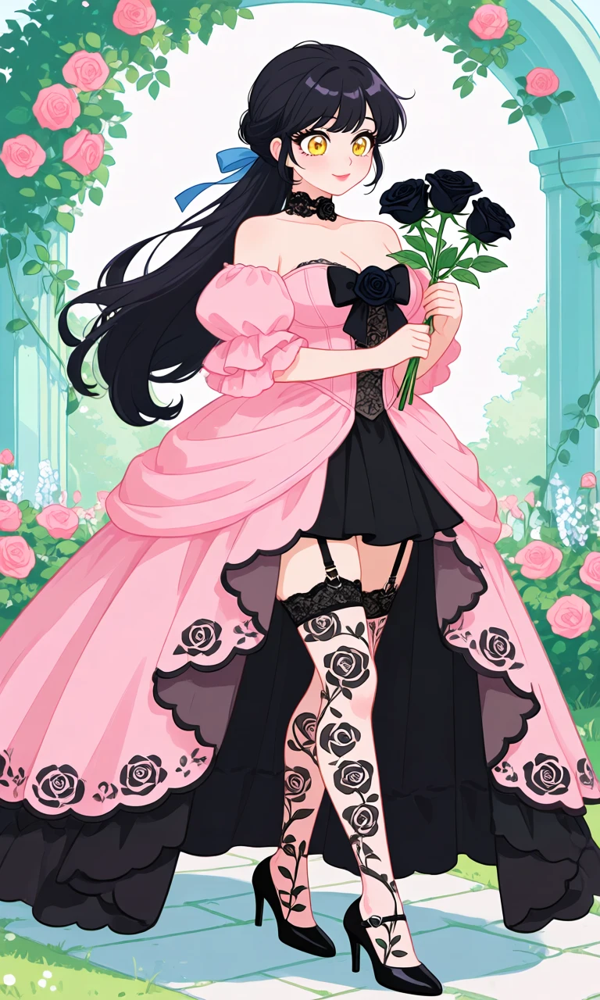
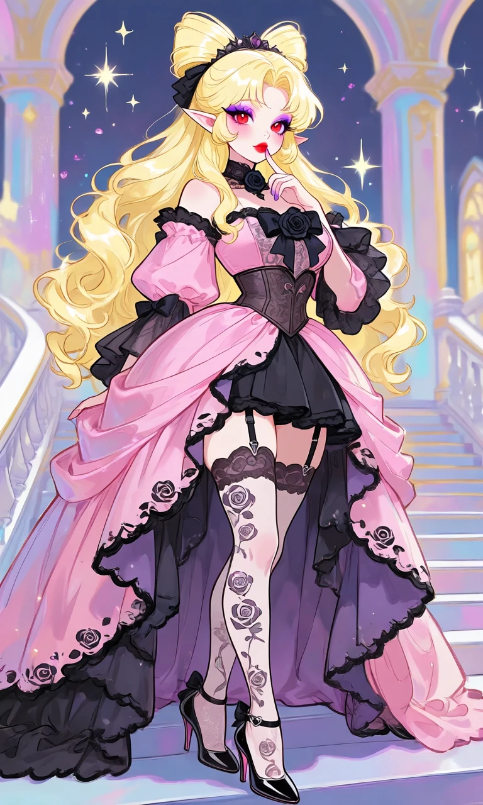

Black Rose Reverie

Outfit Prompt
black choker, rose choker, black rose, off-shoulder dress, pink dress, puffy sleeves, balloon sleeves, ruffled sleeves, large black bow, black rose on chest, corset bodice, lace bodice, sheer panels, rose patterns, draped overskirt, high-low skirt, asymmetrical skirt, scalloped hem, black trim, black underskirt, short black skirt, thighhighs, patterned stockings, rose print stockings, garter straps, heart buckles, black high heels, pointed toe heels, rose motifs, gothic romantic, elegant, ballgown style,
Outfit Examples



